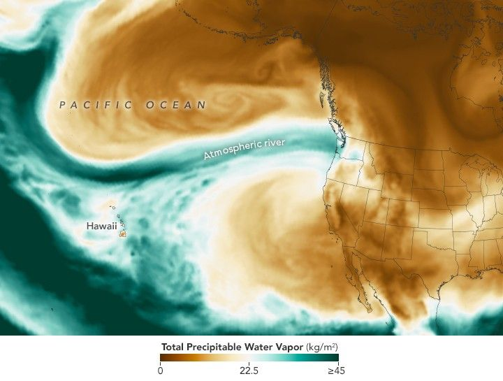

Pacific Moisture Drenches the U.S. Northwest
Waves of heavy rainfall in early December 2025 triggered landslides and flooding across parts of the Pacific Northwest. The deluge was caused by a powerful atmospheric river that began impacting the region around December 7.
Atmospheric rivers are long, narrow bands of moisture that move like rivers in the sky, transporting water vapor from the tropics toward the poles. They occur around the world, most often in autumn and winter. Along the U.S. West Coast, these systems typically carry moisture originating near Hawaii. In this event, however, some of the moisture traveled from much farther away—originating roughly 7,000 miles (11,000 kilometers) across the Pacific Ocean near the Philippines.
The map above shows total precipitable water vapor in the atmosphere at 11:30 p.m. Pacific Time on December 10. It is derived from NASA’s GEOS (Goddard Earth Observing System), which combines satellite data with physical models to estimate atmospheric conditions.
Precipitable water vapor represents the total amount of water contained in a vertical column of air if all the vapor were condensed into liquid. Green areas on the map indicate the highest moisture levels. Not all precipitable water vapor falls as rain, and it does not cap how much rainfall can occur, since additional moisture can flow into the air column. Still, it serves as a useful indicator of regions at risk for excessive rainfall.
According to the National Weather Service, preliminary ground-based measurements showed that several locations in western Washington received more than 10 inches (250 millimeters) of rain over a 72-hour period ending on the morning of December 11. Seattle-Tacoma International Airport set a daily rainfall record on December 10, with 1.6 inches (40 millimeters).
River flooding was ongoing on December 11, with the Skagit River and Snohomish River reaching record or near-record levels. Floodwaters and mudslides forced the closure of numerous roadways, including the eastbound lanes of Interstate 90 east of western Washington.
NASA’s Disasters Response Coordination System has been activated to support response efforts by the Washington State Emergency Operations Center. The team is posting maps and data products to its open-access mapping portal as new information becomes available.